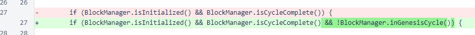
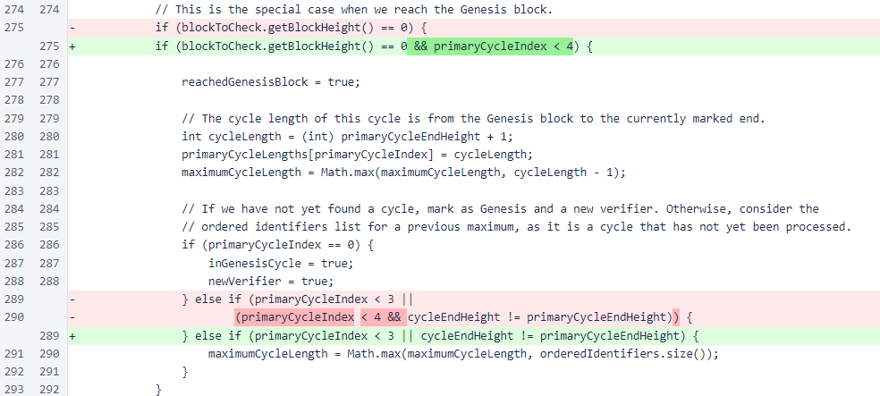
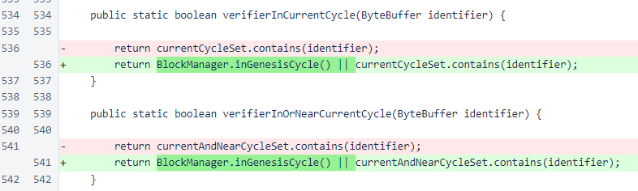
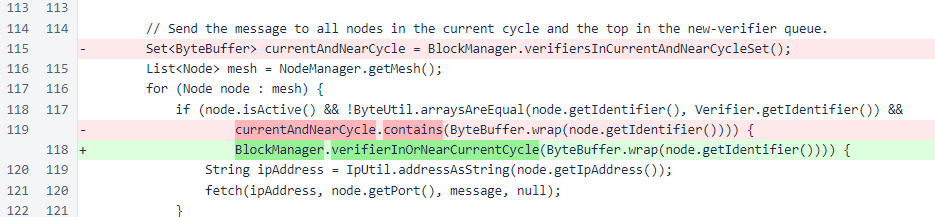
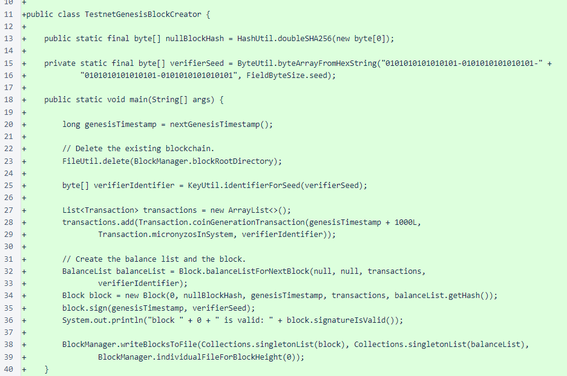
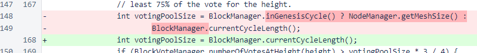
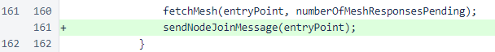

Nyzo version 492 (commit on GitHub) corrects issues with creation of the first cycle of the new blockchain. It also adds a script for generating a new Genesis block to start a new blockchain.
This version affects neither the sentinel nor the verifier in a significant way for the main Nyzo blockchain. It is only of interest to those wishing to start a testnet or a new blockchain.
In versions 475 and 476, various mechanisms were added to divide communication between in-cycle and out-of-cycle verifiers. These mechanisms were preventing processing of the first cycle of a new blockchain, as there is not yet a defined cycle until the first cycle is completed. This version adds some special conditions for the first cycle of a blockchain to allow for proper message passing during that cycle.
In the BlacklistManager class, a condition was added to bypass blacklisting for the Genesis cycle. The “Genesis cycle” is the first cycle of the blockchain, the cycle starting at the Genesis cycle. The “Genesis cycle” is the first cycle of the blockchain, the cycle starting at the Genesis block.
In the calculateCycleInformation() method of the Block class, a check on the value of primaryCycleIndex was added. While this section of code is important and not especially simple to understand, this change is quite safe. Values of 4 or greater would throw an exception at line 281, because primaryCycleLengths is an array that always has a length of 4. So, it is easy to see that there is no situation where the code would have worked correctly before this change but will not work correctly after this change. The condition eliminated at line 290 was correct, but it is no longer necessary due to the addition of the earlier condition.
In both the verifierInCurrentCycle() and verifierInOrNearCurrentCycle() methods of BlockManager, conditions have been added to consider all verifiers as in-cycle verifiers during creation of the Genesis cycle. These changes will not affect any current verifiers of the current Nyzo blockchain, but it is necessary to allow proper communication in a new blockchain. When the current Nyzo blockchain was started, there was no separation of messaging between in-cycle and out-of-cycle verifiers, so this was not a concern.
In the Message class, the broadcast() method now uses the newly modified verifierInOrNearCurrentCycle() method to determine whether each verifier should receive a message. This causes messages to be broadcast to the entire mesh in the Genesis cycle, and it causes no change in behavior for later cycles.
The TestnetGenesisBlockCreator class, as its name indicates, generates a Genesis block for a new blockchain for a testnet. The use of a hardcoded verifier private seed and rounding of timestamps allows this script to generate identical Genesis blocks on multiple systems if run at similar times. This script should not be used unmodified for starting anything other than a disposable testnet blockchain, but it could serve as a basis for a script that could generate a Genesis block for other production blockchains.
In UnfrozenBlockManager, a special case was added to always vote for the lowest-scored block available in the Genesis cycle. When the first cycle has not yet completed, the standard scoring system does not yet apply. The current code assigns large negative values, derived from the verifier identifier, to each block. When establishing a new blockchain that is not intended to be discarded, this logic should be modified to establish a Genesis cycle that suits your specific purposes.

In later logic for determining block vote, the Genesis-cycle case has been removed, as it is now handled in the newly added logic above.
In the only change that will affect operation of verifiers in the current Nyzo blockchain (though in a negligible way), node-join messages are now sent to all trusted entry points when the mesh is requested from those entry points. This improves connectivity of a new mesh, and it adds minimal overhead to the existing mesh.
To start your own testnet, start two or more cloud instances. The lowest-spec instances on most providers should be sufficient. No more than 512MB or RAM and 8GB of storage is necessary. Incoming port 9444 TCP should be open on all instances. The easiest option is to open 9444 to all IPs, but it can also be opened to just the other IPs of the testnet.
Clone the repository (https://github.com/n-y-z-o/nyzoVerifier) on your instances.
Follow the instructions to install the repository, except for the following line, which should be skipped:
sudo cp trusted_entry_points /var/lib/nyzo/production
Instead, create your own file with your testnet verifiers. For simplicity, all verifiers can contain references to all verifiers in the mesh, including self-references. Eliminating self-references (a verifier listing itself as a trusted entry point) will provide a slight startup benefit by eliminating a single null bootstrap response from each verifier's initialization sequence.
The /var/lib/nyzo/production/trusted_entry_points file should look similar to the following:
34.221.223.6:9444 # IP or FQDN of your first verifier 1.2.3.4:9444 # second verifier
Both IPs and FQDNs are supported for the first component. The second component is the port. This can be changed in the code, but the default incoming port for the Nyzo verifier is 9444.
The trusted_entry_points file is how verifiers find each other and establish the mesh. They tell a new verifier what the current state of the blockchain is, and they tell the verifier where the other nodes are. A democratic process is typically used to combine the information from all trusted entry points when joining, but only one trusted entry point is necessary as long as you actually trust the information from that entry point fully.
While there is an option for “testnet” in the code, it is not required for running a testnet. It adds some extra complication and slightly different behaviors, so it's best to build a first testnet without activating the testnet option.
Put the following identifier in the private-seed file of one instance. This is the same seed used in the script for the Genesis block, and using it allows use of a smaller mesh. Without this, three or more verifiers would be needed for the testnet. This file is /var/lib/nyzo/production/verifier_private_seed, and the following line should be the only line in the file:
0101010101010101-0101010101010101-0101010101010101-0101010101010101
If you do not provide this, a cryptographically secure random-number generator will generate a seed for your verifier the first time it starts.
After completing the setup, but before starting the verifier with sudo supervisorctl reload, run the script on each instance at approximately the same time by running this command from the nyzoVerifier directory:
sudo java -jar build/libs/nyzoVerifier-1.0.jar co.nyzo.verifier.TestnetGenesisBlockCreator
In the output, look for a line similar to this:
next increment is in 84.4 seconds (1.4 minutes) at 1549663500000
Ensure that the timestamp (1549663500000, in this example) is the same on all of your instances. When the timestamp is the same, the blocks will be identical, as the script has all the other parameters hard-coded for consistency. This script is a shortcut for generating a single Genesis block and distributing it from a central location.
If the timestamp is not the same, run the script again on all verifiers. If you have trouble getting the timestamp to match, generate a block on a single verifier and copy it to the other verifiers. The file location is /var/lib/nyzo/production/blocks/individual/i_000000000.nyzoblock.
If you do not use the script to create a new Genesis block, your verifiers will download the Genesis block from September 13 and begin creating a new blockchain from it. While your verifiers will have no problem processing this blockchain, it is more than 1.85 million blocks behind as of the date of this release, so the verifiers will take some time to catch up to the current open edge.
Next, start the verifiers. So you can watch the verifiers process the first few blocks, the recommended way to start the verifiers the first time is:
sudo java -jar build/libs/nyzoVerifier-1.0.jar
The verifiers have several recovery mechanisms, so the order in which you start them doesn't matter. The first verifier will, naturally, fail to reach any other verifiers in its initialization process, but the verifiers will quickly find one another and begin exchanging messages after the second verifier is started.
If you start the verifiers immediately after generating the Genesis block, they will just sit and do nothing for a little while after initialization, waiting for the blockchain to begin. Then, you'll see regular activity. When you see lines like this, you know the blockchain has started processing:
freezing block [Block: height=1, hash=69a4...2e3a] with standard mechanism
You can stop the verifiers at any time, then load them in the background with the following command:
sudo supervisorctl reload